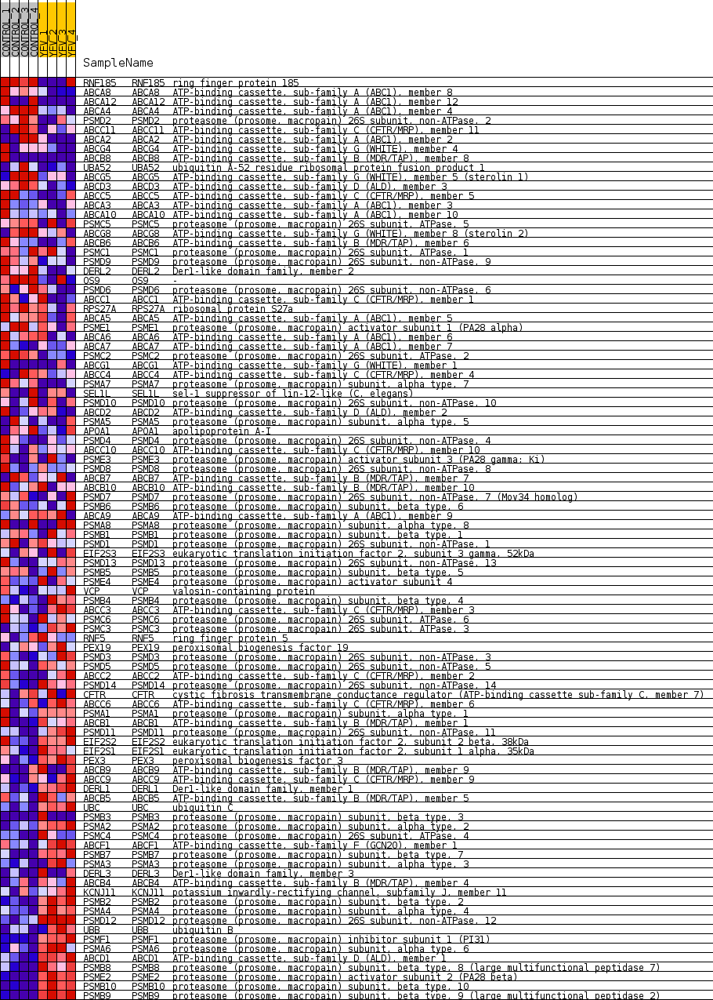
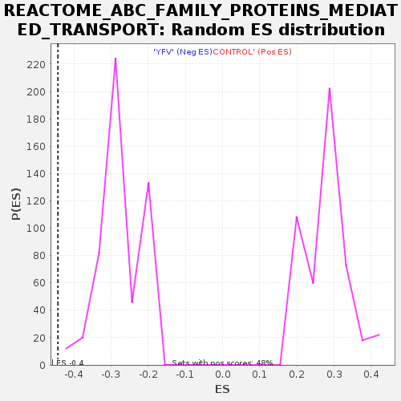

Profile of the Running ES Score & Positions of GeneSet Members on the Rank Ordered List
| Dataset | MATRIZ_GSE99081_collapsed_to_symbols.gsea_CLASE_99081.cls#CONTROL_versus_YFV |
| Phenotype | gsea_CLASE_99081.cls#CONTROL_versus_YFV |
| Upregulated in class | YFV |
| GeneSet | REACTOME_ABC_FAMILY_PROTEINS_MEDIATED_TRANSPORT |
| Enrichment Score (ES) | -0.44270724 |
| Normalized Enrichment Score (NES) | -1.5988871 |
| Nominal p-value | 0.0 |
| FDR q-value | 0.0676303 |
| FWER p-Value | 0.893 |
| SYMBOL | TITLE | RANK IN GENE LIST | RANK METRIC SCORE | RUNNING ES | CORE ENRICHMENT | |
|---|---|---|---|---|---|---|
| 1 | RNF185 | ring finger protein 185 | 230 | 1.020 | 0.0097 | No |
| 2 | ABCA8 | ATP-binding cassette, sub-family A (ABC1), member 8 | 254 | 0.995 | 0.0317 | No |
| 3 | ABCA12 | ATP-binding cassette, sub-family A (ABC1), member 12 | 423 | 0.864 | 0.0416 | No |
| 4 | ABCA4 | ATP-binding cassette, sub-family A (ABC1), member 4 | 552 | 0.804 | 0.0526 | No |
| 5 | PSMD2 | proteasome (prosome, macropain) 26S subunit, non-ATPase, 2 | 711 | 0.738 | 0.0602 | No |
| 6 | ABCC11 | ATP-binding cassette, sub-family C (CFTR/MRP), member 11 | 1289 | 0.575 | 0.0380 | No |
| 7 | ABCA2 | ATP-binding cassette, sub-family A (ABC1), member 2 | 1573 | 0.514 | 0.0325 | No |
| 8 | ABCG4 | ATP-binding cassette, sub-family G (WHITE), member 4 | 1595 | 0.509 | 0.0432 | No |
| 9 | ABCB8 | ATP-binding cassette, sub-family B (MDR/TAP), member 8 | 1702 | 0.500 | 0.0484 | No |
| 10 | UBA52 | ubiquitin A-52 residue ribosomal protein fusion product 1 | 1969 | 0.488 | 0.0434 | No |
| 11 | ABCG5 | ATP-binding cassette, sub-family G (WHITE), member 5 (sterolin 1) | 2065 | 0.475 | 0.0487 | No |
| 12 | ABCD3 | ATP-binding cassette, sub-family D (ALD), member 3 | 2472 | 0.417 | 0.0333 | No |
| 13 | ABCC5 | ATP-binding cassette, sub-family C (CFTR/MRP), member 5 | 2512 | 0.411 | 0.0405 | No |
| 14 | ABCA3 | ATP-binding cassette, sub-family A (ABC1), member 3 | 2857 | 0.358 | 0.0276 | No |
| 15 | ABCA10 | ATP-binding cassette, sub-family A (ABC1), member 10 | 3021 | 0.340 | 0.0255 | No |
| 16 | PSMC5 | proteasome (prosome, macropain) 26S subunit, ATPase, 5 | 3127 | 0.329 | 0.0268 | No |
| 17 | ABCG8 | ATP-binding cassette, sub-family G (WHITE), member 8 (sterolin 2) | 3312 | 0.308 | 0.0226 | No |
| 18 | ABCB6 | ATP-binding cassette, sub-family B (MDR/TAP), member 6 | 3452 | 0.294 | 0.0209 | No |
| 19 | PSMC1 | proteasome (prosome, macropain) 26S subunit, ATPase, 1 | 3697 | 0.267 | 0.0121 | No |
| 20 | PSMD9 | proteasome (prosome, macropain) 26S subunit, non-ATPase, 9 | 3732 | 0.263 | 0.0161 | No |
| 21 | DERL2 | Der1-like domain family, member 2 | 3884 | 0.252 | 0.0127 | No |
| 22 | OS9 | - | 3976 | 0.244 | 0.0128 | No |
| 23 | PSMD6 | proteasome (prosome, macropain) 26S subunit, non-ATPase, 6 | 3986 | 0.243 | 0.0180 | No |
| 24 | ABCC1 | ATP-binding cassette, sub-family C (CFTR/MRP), member 1 | 4082 | 0.237 | 0.0177 | No |
| 25 | RPS27A | ribosomal protein S27a | 4134 | 0.232 | 0.0199 | No |
| 26 | ABCA5 | ATP-binding cassette, sub-family A (ABC1), member 5 | 4197 | 0.227 | 0.0215 | No |
| 27 | PSME1 | proteasome (prosome, macropain) activator subunit 1 (PA28 alpha) | 4391 | 0.212 | 0.0145 | No |
| 28 | ABCA6 | ATP-binding cassette, sub-family A (ABC1), member 6 | 4682 | 0.184 | 0.0009 | No |
| 29 | ABCA7 | ATP-binding cassette, sub-family A (ABC1), member 7 | 4694 | 0.184 | 0.0045 | No |
| 30 | PSMC2 | proteasome (prosome, macropain) 26S subunit, ATPase, 2 | 4826 | 0.173 | 0.0004 | No |
| 31 | ABCG1 | ATP-binding cassette, sub-family G (WHITE), member 1 | 5060 | 0.153 | -0.0104 | No |
| 32 | ABCC4 | ATP-binding cassette, sub-family C (CFTR/MRP), member 4 | 5085 | 0.150 | -0.0084 | No |
| 33 | PSMA7 | proteasome (prosome, macropain) subunit, alpha type, 7 | 5238 | 0.134 | -0.0146 | No |
| 34 | SEL1L | sel-1 suppressor of lin-12-like (C. elegans) | 5245 | 0.134 | -0.0118 | No |
| 35 | PSMD10 | proteasome (prosome, macropain) 26S subunit, non-ATPase, 10 | 5332 | 0.127 | -0.0142 | No |
| 36 | ABCD2 | ATP-binding cassette, sub-family D (ALD), member 2 | 5599 | 0.106 | -0.0281 | No |
| 37 | PSMA5 | proteasome (prosome, macropain) subunit, alpha type, 5 | 5659 | 0.102 | -0.0294 | No |
| 38 | APOA1 | apolipoprotein A-I | 6105 | 0.068 | -0.0554 | No |
| 39 | PSMD4 | proteasome (prosome, macropain) 26S subunit, non-ATPase, 4 | 6348 | 0.049 | -0.0692 | No |
| 40 | ABCC10 | ATP-binding cassette, sub-family C (CFTR/MRP), member 10 | 6660 | 0.029 | -0.0878 | No |
| 41 | PSME3 | proteasome (prosome, macropain) activator subunit 3 (PA28 gamma; Ki) | 6661 | 0.029 | -0.0871 | No |
| 42 | PSMD8 | proteasome (prosome, macropain) 26S subunit, non-ATPase, 8 | 6710 | 0.026 | -0.0895 | No |
| 43 | ABCB7 | ATP-binding cassette, sub-family B (MDR/TAP), member 7 | 6809 | 0.021 | -0.0951 | No |
| 44 | ABCB10 | ATP-binding cassette, sub-family B (MDR/TAP), member 10 | 6830 | 0.020 | -0.0959 | No |
| 45 | PSMD7 | proteasome (prosome, macropain) 26S subunit, non-ATPase, 7 (Mov34 homolog) | 6854 | 0.018 | -0.0969 | No |
| 46 | PSMB6 | proteasome (prosome, macropain) subunit, beta type, 6 | 7048 | 0.008 | -0.1086 | No |
| 47 | ABCA9 | ATP-binding cassette, sub-family A (ABC1), member 9 | 9501 | -0.002 | -0.2605 | No |
| 48 | PSMA8 | proteasome (prosome, macropain) subunit, alpha type, 8 | 9584 | -0.007 | -0.2654 | No |
| 49 | PSMB1 | proteasome (prosome, macropain) subunit, beta type, 1 | 9745 | -0.014 | -0.2750 | No |
| 50 | PSMD1 | proteasome (prosome, macropain) 26S subunit, non-ATPase, 1 | 10102 | -0.030 | -0.2964 | No |
| 51 | EIF2S3 | eukaryotic translation initiation factor 2, subunit 3 gamma, 52kDa | 10115 | -0.031 | -0.2964 | No |
| 52 | PSMD13 | proteasome (prosome, macropain) 26S subunit, non-ATPase, 13 | 10422 | -0.053 | -0.3141 | No |
| 53 | PSMB5 | proteasome (prosome, macropain) subunit, beta type, 5 | 10473 | -0.058 | -0.3158 | No |
| 54 | PSME4 | proteasome (prosome, macropain) activator subunit 4 | 10799 | -0.085 | -0.3339 | No |
| 55 | VCP | valosin-containing protein | 10836 | -0.088 | -0.3341 | No |
| 56 | PSMB4 | proteasome (prosome, macropain) subunit, beta type, 4 | 10839 | -0.088 | -0.3322 | No |
| 57 | ABCC3 | ATP-binding cassette, sub-family C (CFTR/MRP), member 3 | 10863 | -0.090 | -0.3315 | No |
| 58 | PSMC6 | proteasome (prosome, macropain) 26S subunit, ATPase, 6 | 11010 | -0.102 | -0.3381 | No |
| 59 | PSMC3 | proteasome (prosome, macropain) 26S subunit, ATPase, 3 | 11528 | -0.149 | -0.3666 | No |
| 60 | RNF5 | ring finger protein 5 | 11676 | -0.162 | -0.3719 | No |
| 61 | PEX19 | peroxisomal biogenesis factor 19 | 11748 | -0.169 | -0.3724 | No |
| 62 | PSMD3 | proteasome (prosome, macropain) 26S subunit, non-ATPase, 3 | 11846 | -0.178 | -0.3742 | No |
| 63 | PSMD5 | proteasome (prosome, macropain) 26S subunit, non-ATPase, 5 | 11911 | -0.185 | -0.3738 | No |
| 64 | ABCC2 | ATP-binding cassette, sub-family C (CFTR/MRP), member 2 | 11913 | -0.185 | -0.3695 | No |
| 65 | PSMD14 | proteasome (prosome, macropain) 26S subunit, non-ATPase, 14 | 11924 | -0.186 | -0.3658 | No |
| 66 | CFTR | cystic fibrosis transmembrane conductance regulator (ATP-binding cassette sub-family C, member 7) | 11929 | -0.186 | -0.3616 | No |
| 67 | ABCC6 | ATP-binding cassette, sub-family C (CFTR/MRP), member 6 | 12729 | -0.268 | -0.4048 | No |
| 68 | PSMA1 | proteasome (prosome, macropain) subunit, alpha type, 1 | 12891 | -0.287 | -0.4081 | No |
| 69 | ABCB1 | ATP-binding cassette, sub-family B (MDR/TAP), member 1 | 12961 | -0.295 | -0.4054 | No |
| 70 | PSMD11 | proteasome (prosome, macropain) 26S subunit, non-ATPase, 11 | 13564 | -0.374 | -0.4339 | Yes |
| 71 | EIF2S2 | eukaryotic translation initiation factor 2, subunit 2 beta, 38kDa | 13597 | -0.379 | -0.4270 | Yes |
| 72 | EIF2S1 | eukaryotic translation initiation factor 2, subunit 1 alpha, 35kDa | 13618 | -0.383 | -0.4192 | Yes |
| 73 | PEX3 | peroxisomal biogenesis factor 3 | 13679 | -0.391 | -0.4137 | Yes |
| 74 | ABCB9 | ATP-binding cassette, sub-family B (MDR/TAP), member 9 | 13907 | -0.426 | -0.4178 | Yes |
| 75 | ABCC9 | ATP-binding cassette, sub-family C (CFTR/MRP), member 9 | 14043 | -0.449 | -0.4156 | Yes |
| 76 | DERL1 | Der1-like domain family, member 1 | 14159 | -0.474 | -0.4115 | Yes |
| 77 | ABCB5 | ATP-binding cassette, sub-family B (MDR/TAP), member 5 | 14162 | -0.476 | -0.4005 | Yes |
| 78 | UBC | ubiquitin C | 14182 | -0.479 | -0.3904 | Yes |
| 79 | PSMB3 | proteasome (prosome, macropain) subunit, beta type, 3 | 14438 | -0.500 | -0.3944 | Yes |
| 80 | PSMA2 | proteasome (prosome, macropain) subunit, alpha type, 2 | 14672 | -0.535 | -0.3963 | Yes |
| 81 | PSMC4 | proteasome (prosome, macropain) 26S subunit, ATPase, 4 | 14766 | -0.557 | -0.3889 | Yes |
| 82 | ABCF1 | ATP-binding cassette, sub-family F (GCN20), member 1 | 14777 | -0.560 | -0.3764 | Yes |
| 83 | PSMB7 | proteasome (prosome, macropain) subunit, beta type, 7 | 14794 | -0.565 | -0.3641 | Yes |
| 84 | PSMA3 | proteasome (prosome, macropain) subunit, alpha type, 3 | 14958 | -0.609 | -0.3599 | Yes |
| 85 | DERL3 | Der1-like domain family, member 3 | 14963 | -0.610 | -0.3458 | Yes |
| 86 | ABCB4 | ATP-binding cassette, sub-family B (MDR/TAP), member 4 | 14996 | -0.623 | -0.3331 | Yes |
| 87 | KCNJ11 | potassium inwardly-rectifying channel, subfamily J, member 11 | 15063 | -0.643 | -0.3221 | Yes |
| 88 | PSMB2 | proteasome (prosome, macropain) subunit, beta type, 2 | 15120 | -0.662 | -0.3100 | Yes |
| 89 | PSMA4 | proteasome (prosome, macropain) subunit, alpha type, 4 | 15508 | -0.833 | -0.3143 | Yes |
| 90 | PSMD12 | proteasome (prosome, macropain) 26S subunit, non-ATPase, 12 | 15525 | -0.844 | -0.2955 | Yes |
| 91 | UBB | ubiquitin B | 15642 | -0.918 | -0.2811 | Yes |
| 92 | PSMF1 | proteasome (prosome, macropain) inhibitor subunit 1 (PI31) | 15701 | -0.986 | -0.2615 | Yes |
| 93 | PSMA6 | proteasome (prosome, macropain) subunit, alpha type, 6 | 15762 | -1.053 | -0.2405 | Yes |
| 94 | ABCD1 | ATP-binding cassette, sub-family D (ALD), member 1 | 16000 | -1.602 | -0.2175 | Yes |
| 95 | PSMB8 | proteasome (prosome, macropain) subunit, beta type, 8 (large multifunctional peptidase 7) | 16014 | -1.655 | -0.1794 | Yes |
| 96 | PSME2 | proteasome (prosome, macropain) activator subunit 2 (PA28 beta) | 16061 | -1.905 | -0.1374 | Yes |
| 97 | PSMB10 | proteasome (prosome, macropain) subunit, beta type, 10 | 16150 | -2.694 | -0.0795 | Yes |
| 98 | PSMB9 | proteasome (prosome, macropain) subunit, beta type, 9 (large multifunctional peptidase 2) | 16195 | -3.614 | 0.0027 | Yes |

